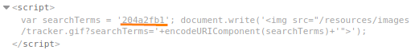

single quote and backslash escaped
1. Submit a random alphanumeric string in the search
box (example: 204a2fb1)
Use Burp Suite to intercept the search request and send it to Burp Repeater.
 Observe that the random string has been reflected inside a JavaScript
string2. Test sending the payload
test'payload to check if is possible breaking out from
the string
Unfortunately the
single quote gets backslash-escaped, preventing from breaking out of the
string
3. Replace your input with the following payload to break out of the script block and inject a new
script:
</script><script>alert(1)</script>
This is been a simple case where we have simply close the script tag (with
</script>) that is enclosing the existing JavaScript, and
introduce some new HTML tags that has triggered the execution of
JavaScript
Bibliography:•
https://portswigger.net/web-security/cross-site-scripting/contexts/lab-javascript-string-single-quote-backslash-escaped•
https://portswigger.net/web-security/cross-site-scripting/contexts